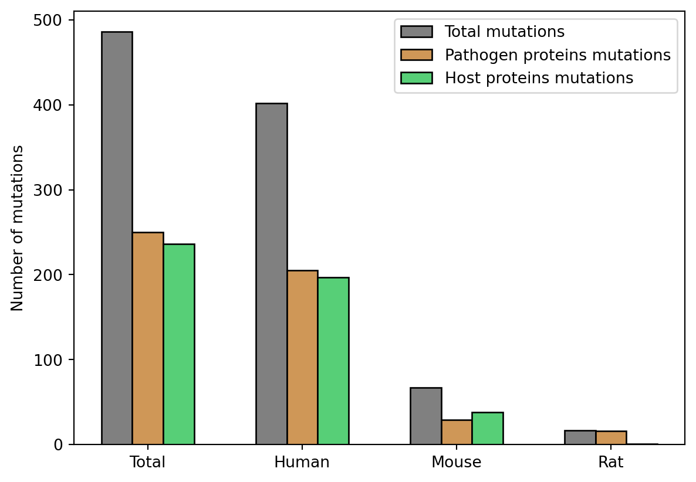
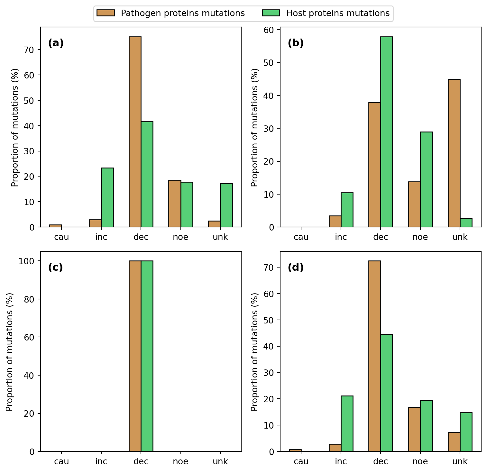
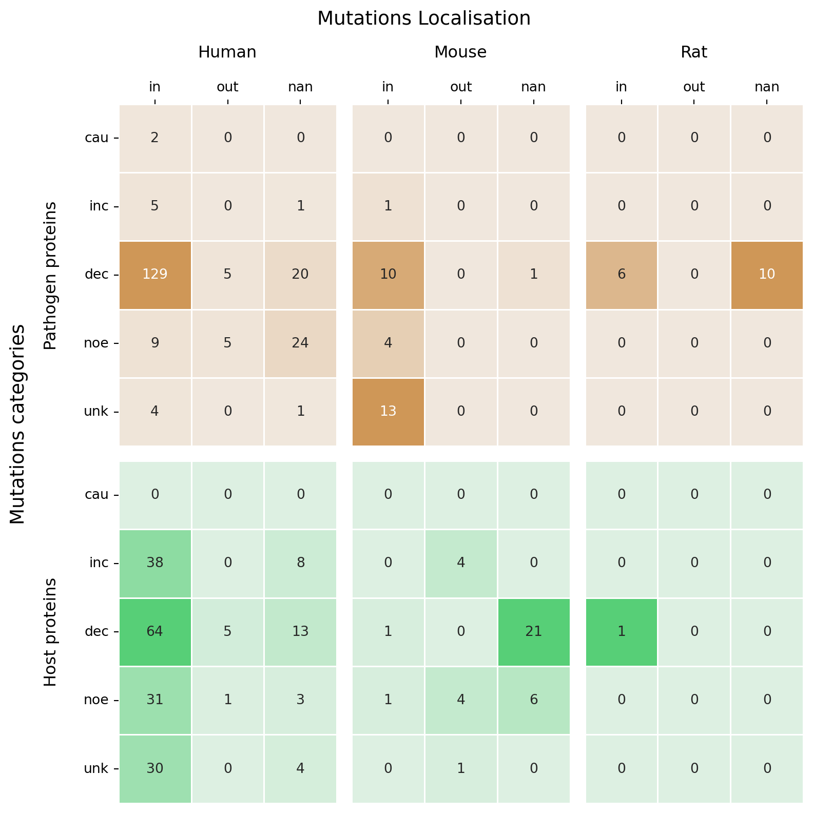

Bactmentha Database, mutations statistics
Introduction
Some mutations informations about either the pathogen or the host proteins can be observed in BactMentha features tables. This code aims to provide some statistics about those mutations and particularly their effect on the interaction and their position (inside or outside the experimentally detected binding region or predictied interface).
Methods
The classification of the features (binding reagions, mutations…) comes from the Search Ontology (https://www.ebi.ac.uk/ols4/). The mimicint interfaces are provided by MimicINT tool.
Mutations
Mutations can be characterized by their effect on the interaction the protein is involved in:
- mutation: A change in a sequence or structure in comparison to a reference entity due to a insertion, deletion or substitution event.
- variant: A natural change in a sequence or structure in comparison to a reference entity.
- mutation increasing interaction: Region of a molecule whose mutation or deletion increases significantly interaction strength or rate (in the case of interactions inferred from enzymatic reaction).
- mutation increasing interaction strength: Region of a molecule whose mutation or deletion increases significantly interaction strength.
- mutation increasing interaction rate: Region of a molecule whose mutation or deletion increases significantly interaction rate (in the case of interactions inferred from enzymatic reaction).
- mutation decreasing interaction: Region of a molecule whose mutation or deletion decreases significantly interaction strength or rate (in the case of interactions inferred from enzymatic reaction).
- mutation decreasing interaction strength: Region of a molecule whose mutation or deletion decreases significantly interaction strength.
- mutatin decreasing interaction rate: Region of a molecule whose mutation or deletion decreases significantly interaction rate (in the case of interactions inferred from enzymatic reaction).
- mutation with no effect: A change in a sequence or structure in comparison to a reference entity due to a insertion, deletion or substitution event that does not have any effect over an interaction when compared with the wild-type.
- mutation causing an interaction: A change in a sequence or structure in comparison to a reference entity due to a insertion, deletion or substitution event that enables an interaction when compared with the wild-type, which does not interact.
The mutations have been categorized in five distinct categories depending on their effect:
- increasing the interaction (+- strength / rate)
- decreasing the interaction (+- strength / rate)
- causing the interaction
- no effect
- unknown effect (mutation / variant)
Binding informations
Experimentally detected binding regions are defined in three distinct categories:
- binding-associated region: A region of a molecule or a component of a complex identified as being involved in an interaction. This may or may not be a region of the molecule in direct contact with the interacting partner.
- sufficient binding region: Binding will occur when this sequence range is present within a molecule or part of a molecule. This region will contain the direct binding region but may be longer.
- necessary binding region: A sequence range within a molecule identified as being absolutely required for an interaction. The sequence may or may not be in direct physical contact with the interaction partner.
Interfaces are domains or motifs. More informations can be found about those elements on Interpro (https://www.ebi.ac.uk/interpro/) and ELM respectively (http://elm.eu.org/infos/news.html).
Mutations stats computation
In BactMentha, a single interaction can be referenced with distinct mnt_interaction_id (unique identifiers) depending on the method that was used to identify the interaction, the confidence score… In the features table, multiple features can be associated to the same interaction (mnt_interaction_id) when multiple binding associated regions or mutations have been identify during the experiment for example. Finally, distinct mnt_interaction_id that refer to the same interaction in terms of interacting partners (one pathogen protein and one host protein) that has been detected through different technics can be related to the same mimicint interface inferrence.
pathogen protein host protein
Resluts
Are mutations more found in the host or pathogen proteins ? Or do they have as much mutations as the other one ? Would it be the same upon all the host organisms ?
Hypothesis : mutations appear randomly and are conserved or not. We can imagine that there will be as much conserved mutations in both categories of proteins (host and pathogens) and that it will be the same for all the host taxa.
We can see on the plot that for each host taxon, the number of mutations found in the pathogens proteins is likely the same as for the host proteins. We can see for the rat a bigger difference in the number of mutations in the pathogen and host proteins bars but it could be due to a lack of data for this specific taxon.
Are some mutation types more present in the host or pathogens proteins than in the other organism ones ? What could that mean biologically ?
Hypothesis : we can imagine we’ll found more mutations related to the decrease of the interaction on the host side because evading the interaction with the pathogen would be an advantage. At the contrary we can think that more mutations related to the decrease of the interaction or causing the interaction will be found on the pathogens side.

- We can see on the subplot (a) that most of the human pathogens interactors proteins have known mutations effects, with a majority of mutations decreasing the interaction (strength/rate). On the host proteins side, the mutations seem to also lead in the majority of the cases to a decrease of the interaction, but the mutations with no or unknown effect represent almost 40% of the mutations detected on the host proteins and more than 20% of the human proteins mutations seem to increase the interaction (strength/rate) with their pathogen interactors.
- On the second suplot, we can see that for the mouse, more than the half of the mutations detected on the pathogen proteins have an unkown or no effect on their interation with the mouse proteins. But here again, the majority of mutations on the pathogens proteins with a known effect are related to a decrease in the interactions with the host proteins. Comparing the mouse proteins mutations distribution to the human one, we can see more mutations without effect and less mutations associated to an increase of interaction (strength/rate).
- For the rat, the few detected interaction are all leading to a decreasing interaction rate or strength.
- Finally, the distribution of the mutations effect depending on if they’re found on the host protein or the pathogen protein suggests that the majority of the detected mutations are associated with a decrease of the interaction rate or strength, while a small part of those mutations can be realted to an increasing interaction (rate/strength) or have no effect, independant on the regardless of the organism to which they belong. However, the number of identified mutations vary among the host organisms. This lack of data could lead to a bias in the mutations effects distribution.
The fact that many known mutations are leading to a weaker interaction was expected on the host protein side to avoid the interaction with the pathogen proteins. Maybe the fact that the pathogens proteins are also related to a lower interaction strength or rate could be due to a faster mutation rate of those organisms or to a specificity for some host organisms. It would be interesting to take an example of some pathogens that are known to interact with both the human and the mouse for which we have mutation data on the pathogen protein side. We could then try to identify some pathogen proteins interacting with both host proteins ans try to see if the mutation effect is different against one and the other.
Are certain mutation effects found more in the binding regions and interfaces than out of them ? Is there a difference between host and pathogen proteins mutations localisation ?
Hypothesis : we can imagine that the mutations that are impacting the interaction (positively or negatively) will be found in majority inside the binding regions and interfaces, while the mutations with no effect could be found more out of those regions. We can imagine that mutations or variant without description of the effect can equally be found inside or outside those regions. And finally, we could expect the results to be the same for the pathogen and the host proteins mutations.

We can see on figure 3 that the majority of the mutations, upon the three taxa and both pathogen and host proteins, are found inside the binding regions or interfaces while there is a notable proportion of mutations for which the exact location on the protein is unknown. We can also see that those mutations are mainly linked to a decrease in the interaction length or strength independant of the taxon the proteins belong to. We cannot clearly define if some effects are associated more to the host proteins than to the pathogen proteins due to a lack of mutations data, even if the mutations in proteins of pathogens interacting with human proteins seem to be related more to the decrease of the interaction (strength/rate).
Can we infer the effects of some muattions when there are no data of binding (experimental or prediction) based on the previous results ? If yes, how ? If no, what could we do to try to know this ?
–> reprendre l’ensemble des stats pour voir.
Annexe
Put all the tables here